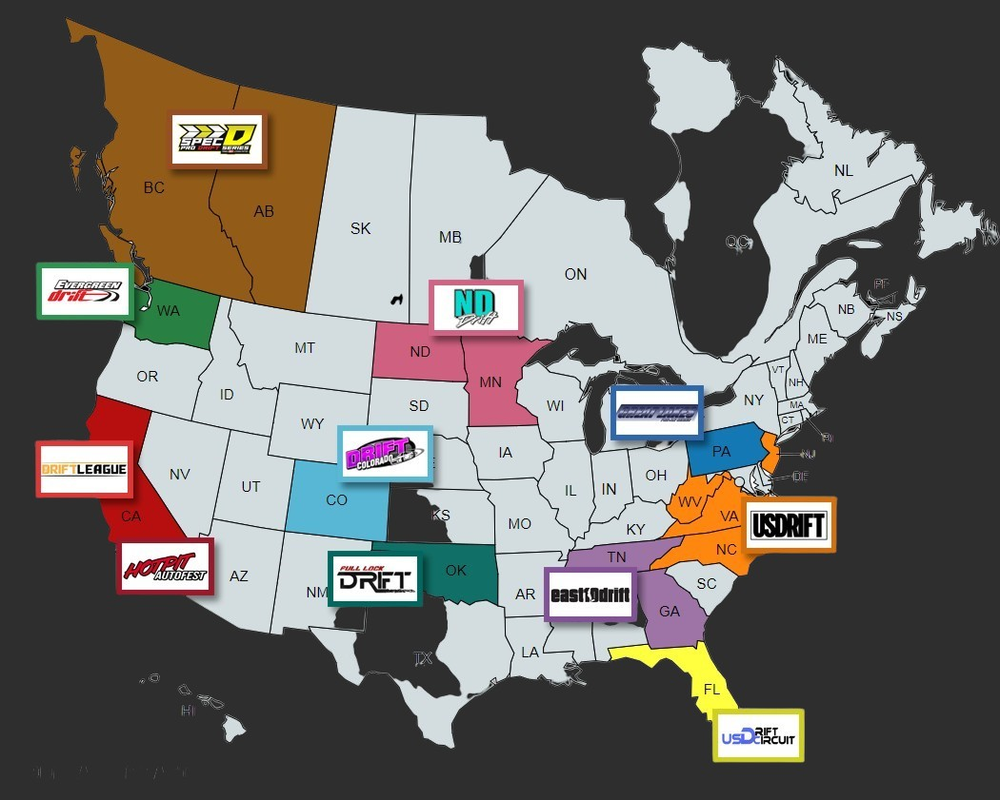

Formula Drift PRO-AM Licensing Series Information
Welcome to the 2024 Formula DRIFT Licensing Series Program (PRO-AM).
Multi-round Championship A MRC is a set (3 or more) of events that crown a cumulative championship. The following Partners are conducting a Multi-round Championship: Drift Colorado events are in the surrounding communities of the Denver, Colorado Springs, Pueblo, and Boulder. East10 events are in the surround communities of Atlanta, Georgia and Bristol, Tennessee. Full Lock Drift are in the surrounding communities of Oklahoma City and Tulsa, Oklahoma. Great Lakes PRO-AM Series are conducted at Lake Erie Speedway in North East, Pennsylvania. ND Drift are in the surrounding area of Fargo, North Dakota. Spec-D Events are in the Canadian provinces of Alberta and British Columbia. US Drift Circuit are conducted at Sebring International Raceway in Sebring, Florida. PRO/AM series partners will be awarding the 1st place finisher with the eligibility to compete in Formula Drift PROSPEC in the following season*. *Licenses will not be allowed to be deferred or carried over to an alternative season.